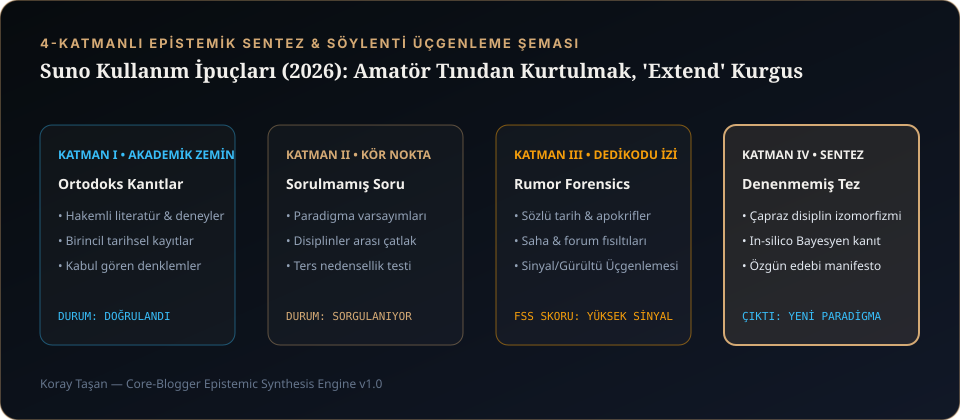

1. Bir Şarkının "Amatör AI Üretimi" Olduğu Nereden Anlaşılır?
Deneyimli bir prodüktör veya müzik kulağı gelişmiş bir dinleyici, amatörce üretilmiş bir yapay zekâ şarkısını ilk 15 saniyede şu 4 belirtiden tanır:
- 2. Dakikadan Sonra Artan Metalik Tiz (High-Frequency Shimmer): Özellikle zillerde (hi-hat/cymbal) ve vokal "s/ş" harflerinde oluşan faz kaymalı dijital hışırtı.
- Dinamik Düzlük (Flat Wall-of-Sound): Şarkının 1. kıtası ile nakaratı aynı ses yüksekliğinde ve aynı enstrüman yoğunluğunda başlar; şarkı hiç nefes almaz.
- Uzatma (Extend) Dikiş İzleri: Şarkıyı uzatırken yanlış saniyeden kesildiği için davul vuruşunun (downbeat) aksaması veya vokalin ses renginin bir anda değişmesi.
- Anlamsız Outro Uzatmaları (Hallucinated Endings): Şarkı bittiği hâlde modelin kendi kendine 40 saniye daha anlamsız mırıldanmalar eklemesi.
CORE MUSIC çatısı altında CORE MUSIC LONDON ve khrysaor kataloglarını hazırlarken bu dört sorunu tamamen ortadan kaldıran deterministik bir iş akışı geliştirdik.
2. Suno v3.5 vs Suno v4 vs MiniMax Music-01: Hangi Model Ne Zaman Seçilmeli?
Tek bir model her şarkı türünde en iyi sonucu vermez. Stüdyomuzda parçanın diline ve türüne göre uyguladığımız model seçim matrisi:
| Motor / Model | En Güçlü Olduğu Alan | Zayıf Noktası & Dikkat Edilecekler | CORE MUSIC Kullanım Senaryosu |
|---|---|---|---|
| Suno v4 | Kristal netliğinde tizler (Air Band), geniş stereo ayrışım, modern elektronik ve pop miks kalitesi. | Çok yoğun enstrümanlı parçalarda 2:30 sonrasında hafif shimmer üretebilir. | CORE MUSIC LONDON (Cold Asphalt, Pay The Price) gibi 120 BPM karanlık elektronik ve İngilizce vokal prodüksiyonları. |
| Suno v3.5 | Uzun soluklu (4 dakika) bütünlüklü melodik yapı, duygusal bariton derinliği ve organik geçişler. | Üst frekanslar (10 kHz+) v4'e göre biraz daha mat ve analog tınlar. | khrysaor akustik/indie baladlarının ilk melodik kılavuz (guide) demoları. |
| MiniMax Music-01 | Türkçe hece veznine (prozodiye) mutlak sadakat ve reference_audio_url ile sıfır-atış ses referansı. |
Çok karmaşık orkestral geçişlerde bölüm etiketlerine Suno kadar esnek tepki vermeyebilir. | Karmaşık Türkçe dizelerin hiç kelime yutmadan söylenmesi gereken vokal odaklı parçalar. |

3. "Metalik Tiz / Shimmer" Sorununu Prompt İle Engelleme
Otoregresif ses modelleri her yeni saniyeyi bir önceki saniyenin spektrumuna bakarak tahmin eder. Eğer tarz kutusuna bright, ultra crisp, heavy reverb, loud master gibi tizleri parlatan kelimeler yazarsanız, model 90. saniyeden sonra yüksek frekans gürültüsünü kendi üzerine katlayarak metalik çınlama (shimmer) üretir.
Metalik tizleri üretim aşamasında %80 oranında kesmek için Tarz (Style) ve [Production] etiketlerinize şu akustik sönümleyicileri ekleyin: warm analog tape saturation, rolled-off highs, dry room acoustics, natural transients, felt piano, muted cymbals. Tizleri yapay zekâya parlatmayın; temiz ve sıcak aldığınız çıktıyı daha sonra kendi EBU R128 mastering zincirinizde 11 kHz High-Shelf EQ ile siz parlatın.
4. Kusursuz 'Extend' (Uzatma) Kurgusu: Ölçü Sonu Nefes Matematiği
Bir parçanın ilk 1 dakika 30 saniyesi harika çıktı ama 2. kıtada vokal istediğiniz gibi gitmedi. Extend (Uzat) butonuna bastığınızda dikiş izi kalmaması için şu 3 kuralı uygulayın:
- Kesim Noktasını (Timestamp) Kelimenin Üzerine Koymayın: Vokalin son kelimesi biter bitmez (örneğin
01:14'te) keserseniz, yeni uzatma parçası nefes almadan girer ve ritim aksar. Kesim noktasını, cümlenin bittiği yerden 1 veya 2 vuruş sonraya (ölçünün 4. vuruşundaki boşluğa) koyun. - Uzatma Kutusuna Yalnızca Kalan Sözleri Yazın:
Extendyaparken şarkının başındaki 1. kıtayı tekrar kutuya yazmayın! Sadece kestiğiniz saniyeden sonra başlayacak bölüm etiketini (ör.[Verse 2: ...]) ve kalan sözleri yazın. - Kıpadan Önce
[Instrumental Interlude: two bars]Köprüsü Koyun: Eğer kestiğiniz yerde enstrüman yoğunluğu yüksekse, yeni kıtaya doğrudan vokal ile girmek yerine en üste[Instrumental Break: two bars, bass groove continues]yazarak modelin mevcut tempoya (BPM) kilitlenmesine 3-4 saniye izin verin.
5. CORE MUSIC Stüdyosundan 10 Altın Suno Kullanım İpucu
- 1. Enstrümantal Giriş Süresini Bar Sayısıyla Sabitleyin: Sadece
[Intro]yazarsanız bazen 2 saniyede, bazen 35 saniyede vokale girer.[Intro: instrumental, sparse felt piano, eight bars]yazarak süreyi 15-18 saniyeye sabitleyin. - 2. Dinamik Kontrast İçin Kıtalarda Bası ve Davulu Kısın:
[Verse 1: quiet vocal, solo piano, no drums, muted bass]etiketiyle kıtayı sade tutun ki[Chorus: full drums enter, sub-bass drop, wide synth]geldiğinde nakarat patlasın. - 3. Parantez İçi
(...)İle Arka Vokal (Ad-lib / Backing Vocal) Üretin: Dizenin sonunaGece bitmiyor (bitmiyor...)şeklinde normal parantez eklerseniz, model parantez içini fısıltılı veya oktav arka vokal olarak okur. - 4. Büyük Harf (ALL CAPS) Kullanımını Yalnızca Climax'e Saklayın: Bir dizeyi tamamen BÜYÜK HARFLE yazmak modelin o dizeyi yüksek göğüs sesiyle (belting/shouting) söylemesini tetikler. Sadece son nakaratın zirve cümlesinde kullanın.
- 5. Düetlerde Vokal Karışmasını Önleyin:
[Verse 1: Male Baritone Vocal]ve[Verse 2: Female Alto Vocal]etiketlerini açıkça belirtin; nakaratta ise[Chorus: Male and Female Duet, octave harmony]kullanın. - 6. Tempo Kilidi İçin Hem BPM Hem Groove Yazın: Sadece
120 BPMyazmak yetmez;120 BPM four-on-the-floorveya116 BPM halftime grooveyazarak davulun vuruş karakterini belirleyin. - 7. Enstrüman Sololarında Tını Tarif Edin:
[Solo]yerine[Cello Solo: weeping legato phrasing, four bars]veya[Electric Guitar Solo: warm neck pickup, slow bluesy bends]yazın. - 8. "No Belting / Restrained Delivery" İle Samimiyeti Artırın: Yapay zekâ vokalleri varsayılan olarak gereksiz yere bağırma (over-singing) eğilimindedir.
restrained delivery, conversational quiet vocal, no beltingkomutları khrysaor tarzı samimi gece vokallerinin sırrıdır. - 9. Şarkıyı Bitirmek İçin Üçlü Kilit Kullanın: En sona mutlaka
[Outro: repeating piano motif]+[Fade Out]+[End]ekleyin. - 10. Ham Çıktıyı Asla Olduğu Gibi Yayımlamayın: En iyi Suno çıktısı bile bir "kılavuz kayıt"tır. Onu gerçek bir plak şirketi standardına taşımak için Stem Ayrıştırma, Vokal Klonlama (SVC) ve EBU R128 Mastering kılavuzumuzdaki stüdyo hattından geçirin.